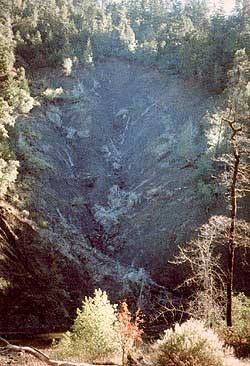

Severe erosion can be a by-product of industrial clear-cut tree farming. With environmental damage like that, no wonder many people concerned about forests practically cringe when they hear the word ""timbering"". But the choice doesn't always have to be between total destruction and no tree harvesting at all.